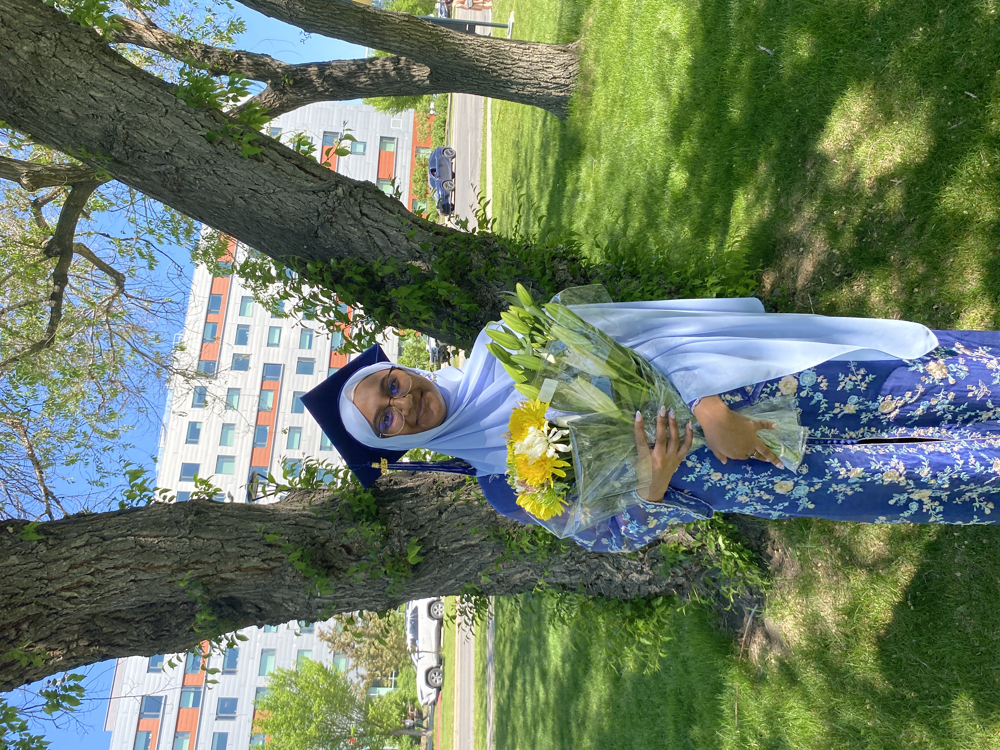
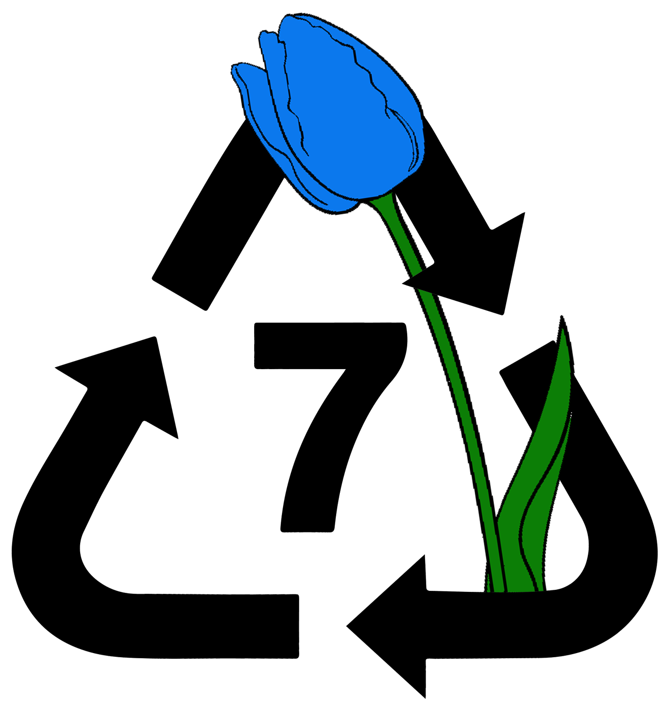

About Me
My name is Areej Khan, and I am a second-year Mechanical Engineering student at the University of Alberta. Currently, I am building technical skills in Python, Fusion 360, SolidWorks, and GitHub through coursework and self-directed projects. I have over four years of team leadership and event coordination through volunteering and work experience. Look through my website to get to know a little bit more about me
Contact Information
Phone Number: (587) 579-7541
Emial: ajkhan1@ualberta.ca
Address: 67 Nolanlake View NW
Linkedin: www.linkedin.com/in/areej-khan-400084351
Education

University of Alberta (2025 - Ongoing)
- Bachelor of Science in Mechanical Engineering (BSc Eng)
- Academic terms completed: 2/8
- Length of degree: 4 years
Sir Winston Churchill High School (2022 - 2025)
- Graduated with honors with distinction
- International Baccalaureate (IB) certificate program
- Completed 5 IB honors courses
- Received a 6 in: Chemistry HL, Microeconomics HL, Macroeconomics HL, and Global Economics HL
- Received a 5 in: Math SL, and Physics SL
- Completed over 75+ hours of creativity, activity, and service
Honors and awards
Rutherford scholarship
- Was awarded 2500$ on academic merit

International Baccalaureate certificate
10th Place, Provincials - Caring for Our Watersheds Canada
- Was awarded over 100$
- Designed a water saving garden concept aimed to grow fresh fruits and vegetables for the community and surrounding school, that would virtually take care of itself.
- Was awarded money to put the concept into real world application
10th Place, Provincials - Caring for Our Watersheds Canada
- Was awarded over 100$
- Designed a water saving garden concept aimed to grow fresh fruits and vegetables for the community and surrounding school, that would virtually take care of itself.
- Was awarded money to put the concept into real world application
Licences and certificates
Concepts in Safety Leadership
- Issuing Organization: Faculty of Engineering, University of Alberta
- Issued: November 2025
- Valid until: November 2030
Workplace Hazardous Materials Information System (WHMIS)
- Issuing Organization: University of Alberta
- Issued: November 2025
- Valid until: N/A
Valid Class 5 driver’s licence
Work Experience
Private Tutor (2018 - ongoing)
- Tutoring kids in math, science, and economics since 2018
- Currently providing one on one tutoring for a neurodivergent 7th grader in math, in increments of 1-hour sessions, 3 times a week.
- Design and develop lesson plans to keep students engaged with the content and build a conceptual understanding rater then rogue memorization.
- Developing skills in public speaking, patience, adaptability, communication and understanding
Volunteer Experience

GirlUp Churchill (2022-2025)
- Helped plan and execute fundraisers to support women and children in developing countries gain access to food, clean water, education and safety.
- Henna for charity: Planned and executed a henna fundraiser during Ramadan and Diwali that raised upwards of $500. This event continues to be held annually at Sir Winston Churchill High school by the GirlUp team.
Business Office Assistant (2022-2025)
- Volunteered at my high school’s business office at the start and end of each semester
- Helped with textbook distribution and returns
- Processed and organized over 1000 textbooks per year
- Trained and lead gropes of 5-10 students every semester on how to process returns and distribute textbooks using the school’s website and technologies
- Resolves issues with late fees and de-escalating conflict
Beakerhead Done Theater (2024)
- Selected as one of the 2 representatives to volunteer at Beakerhead Dome theater 2024 at Telus Sparks
- Tracked number of visitors entering and exiting the dome theater
- Answered questions about the shows being played and other exhibits


Interests


Artistry
- Self-taught traditional henna artist
- Create custom henna designs for friend, family and clients for special occasional including: Eid, birthdays, graduations, and weddings
Hiking And Canoeing


Sewing
- Self-taught seamstress
- Enjoy sewing everyday handy items including bags, coasters, and purses
Photography and videography
- Capturing everyday moments that can be enjoyed for years to come
- Comfortable using photo and video editing software’s such as photoshop


Memberships

Level 7 General Member
- Working on training for CNC machine, shredder injection molding, and 3D printer
- Learning CAD modeling though Fusion 360 and SolidWorks
- Working on designing a machine to recycle 3D printer failed or leftover filament from Elko Engineering Garage
References
References will be available on request
Contact Information
Phone Number: (587) 579-7541
Emial: ajkhan1@ualberta.ca
Address: 67 Nolanlake View NW